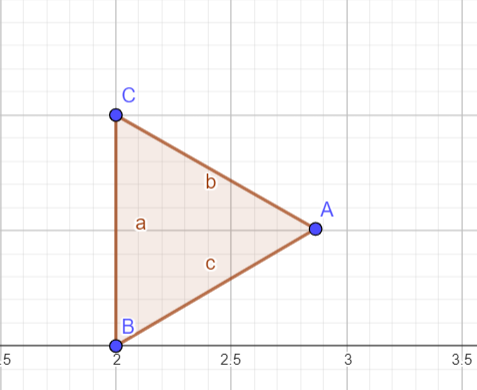

Háromszögek
Általános Háromszög és Tulajdonságai
Az általános háromszög olyan sokszög, amelynek három oldala és három csúcsa van. Az általános háromszög minden oldala és minden belső szöge különböző lehet.
Alapvető Tulajdonságok
- A háromszög belső szögeinek összege mindig 180°.
- Egy háromszög bármely oldala rövidebb, mint a másik két oldal összege.
- A háromszög külső szögeinek összege 360°.
- A háromszög hosszabb oldalával szemben nagyobb szög van.
Ezeket a tulajdonságokat már Euklidesz is leírta az "Elemek" című művében Kr. e. 300 körül.
További Jellemzők
- A háromszög oldalfelező pontjai és a háromszög magasságainak talppontjai mind egy körön fekszenek, amit Feuerbach-körnek vagy a „kilenc pont körének” neveznek.
- Két háromszög akkor és csak akkor hasonló, ha létezik olyan megfeleltetés, ahol a szögeik megegyeznek, és megfelelő oldalaik aránya is megegyezik.
Különleges Háromszögek és Szabályaik
A különleges háromszögek olyan háromszögek, amelyek bizonyos szimmetriák vagy arányok miatt kiemelkednek. Ezek a háromszögek különféle tulajdonságokkal és szabályokkal rendelkeznek, amelyek megkülönböztetik őket az általános háromszögektől.
Egyenlő Oldalú Háromszög (Szabályos Háromszög)
Mindhárom oldala és szöge egyenlő. A belső szögek nagysága 60°.
Ha az oldalak hossza \( a \), akkor a területe \( T = \frac{\sqrt{3}}{4}a^2 \) és a magassága \( h = \frac{\sqrt{3}}{2}a \).
Egyenlő Szárú Háromszög
Legalább két oldala azonos hosszúságú, és a két egyenlő oldallal szemben lévő szögek is egyenlőek.
Derékszögű Háromszög
Egyik belső szöge 90° (derékszög). A derékszöggel szemközti oldalt átfogónak, a derékszöget közrefogó oldalakat befogóknak nevezzük. A derékszögű háromszög területe \( T = \frac{a \cdot b}{2} \), ahol \( a \) és \( b \) a befogók hossza.
45°-45°-90° Háromszög
Mindkét befogója egyenlő hosszúságú, és a befogók hosszának aránya az átfogóhoz \( 1:1:\sqrt{2} \).
30°-60°-90° Háromszög
A rövidebb befogó, a hosszabb befogó és az átfogó hosszának aránya \( 1:\sqrt{3}:2 \).
Hegyesszögű Háromszög
Mindhárom belső szöge kisebb, mint 90°.
Tompaszögű Háromszög
Van egy belső szöge, ami nagyobb, mint 90°.
A háromszögek tulajdonságai közé tartozik a szögfelező tétel, amely szerint egy adott csúcshoz tartozó szögfelező az oldalakat olyan arányban osztja ketté, amely megegyezik a szögfelezővel szemközti oldalak hosszának arányával.